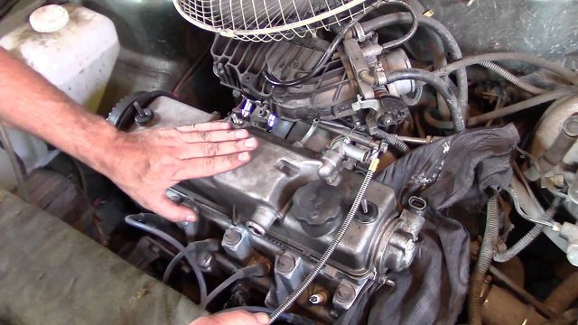

Потенциальный покупатель автомобиля задает себе вопрос: какой покупать? С бензиновым или дизельным двигателем? Однозначно ответить на этот вопрос невозможно.
Попытаемся рассмотреть факторы, от которых зависит принятие правильного решения.
Если автомобиль оборудован дизельным двигателем, то в процессе эксплуатации будут значительно сэкономлены средства за счет меньшего расхода топлива. Чем это объясняется? У дизельного двигателя легкового автомобиля степень сжатия находится в пределах 20—22 единицы по сравнению с 9—10 у бензиновых двигателей, что обеспечивает более высокий КПД.
Кроме того, у дизеля регулирование рабочей смеси в основном качественное, т. е. вне зависимости от частоты вращения коленчатого вала и нагрузки в цилиндры подается практически одинаковое количество воздуха, а количество используемого топлива увеличивается с нагрузкой. Но даже при полной мощности масса впрыскиваемого топлива в 1,5— 1,7 раза меньше, чем у бензинового двигателя такого же рабочего объема.
Это означает, что действительная степень сжатия, т. е. давление и температура конца сжатия, не зависит от нагрузки, а рабочая смесь по сравнению с бензиновым двигателем всегда очень бедная. Эти факторы обеспечивают дизелю высокую эффективность сгорания и последующего расширения и на частичных нагрузочных режимах.
В условиях эксплуатации стабильность мощностных показателей и расхода топлива зависит в первую очередь от сопротивления воздухоочистителя, которое влияет на наполнение цилиндров воздухом (в том числе и двигателей с турбонаддувом), угла опережения впрыска топлива, давления начала подъема иглы форсунки (давления начала впрыска), качества распыла топлива форсунками, а также от характера (закона) подачи топлива топливным насосом высокого давления.
Следует отметить, что стабильность регулировочных параметров системы подачи топлива у дизельных двигателей выше, чем у бензиновых. Однако в процессе эксплуатации нужно строго контролировать качество очистки воздуха и топлива, а также исключить возможность перегрева двигателя, что незамедлительно повлияет на работу форсунок и поршневой группы.
Дизельные двигатели более долговечны, чем бензиновые, что объясняется более прочным и жестким выполнением блока цилиндров, коленчатого вала, деталей цилиндро-поршневой группы, головки блока цилиндров и применением дизельного топлива, которое в отличие от бензина в известной степени также является смазочным материалом.
К недостаткам дизельных двигателей следует отнести большую массу, меньшую литровую мощность, повышенный шум из-за высокого давления сгорания и затрудненный пуск при отрицательных температурах окружающего воздуха, особенно у автомобилей прошедших 100 000 км и более.
В процессе эксплуатации изнашиваются плунжерные пары топливного насоса высокого давления, нарушается герметичность посадки иглы форсунки, что приводит на низких оборотах при пуске (70—90 оборотов в минуту) к плохому распылению шва. В то же время в результате появившегося износа цилиндро-поршневой группы на такой частоте вращения заметно увеличивается прорыв сжимаемого воздуха в картер, а значит, давление и температура не достигают значений, необходимых для воспламенения распыленного топлива.
Тем не менее существуют достаточно простые устройства, которые резко улучшат запуск дизелей при низких температурах, в том числе теплообменное устройство, устанавливаемое на период зимней эксплуатации во впускной коллектор. Опыт эксплуатации дизельных двигателей позволяет сделать вывод, что рассмотренные выше изменения, которые происходят в топливной аппаратуре и цилиндро-поршневой группе, почти не вызывают снижения мощности и увеличения расхода топлива. Двигатели подвергаются ремонту, главным образом, из-за повышения расхода смазочного масла, что можно легко определить по доливу и появлению голубого дыма, который образуется из-за сгорания масла.
Бензиновые двигатели имеют более высокую частоту вращения, большую литровую мощность, шум и вибрации более низкие. Регулирование горючей смеси в них, главным образом, количественное. Поэтому на малой и средней мощностях (двигатели легковых автомобилей работают в основном в этих режимах), действительная степень сжатия — низкая, т. е. в результате дросселирования на впуске и частичного наполнения цилиндра вместо давления сжатия, например 2,5 МПа на полной мощности, смесь сжимается до 1,0 МПа. Отсюда — низкая эффективность сгорания и последующего расширения, а значит, и большой расход топлива.
Таким образом, если при номинальных мощностях эффективный КПД бензинового двигателя на 20 % ниже, чем у дизеля, то на частичных режимах разрыв увеличивается до 40 % и более. Это подтверждается многочисленными сравнительными эксплуатационными испытаниями автомобилей с дизельными и бензиновыми двигателями одинаковой мощности. Снижение расхода топлива на 100 км пути в зависимости от условий движения (в городе или на магистралях) составляет 2 5—50 %.
Что касается токсичности отработанных газов, то проведенное за последнее десятилетие усовершенствование бензиновых двигателей, включая управляемый поршневым процессором прямой впрыск форсунками, значительно улучшило этот показатель. Однако многие специалисты ведущих автомобильных компаний, например фирмы Volkswagen, считают, что в условиях повышенных требований к защите окружающей среды и расходу топлива дизели остаются наиболее перспективными двигателями.
В настоящее время в ФРГ на 14 % автомобилей установлены дизели, во Франции — на каждом третьем автомобиле, а в Австрии — на каждом втором.
Еще немного о двигателях для легковых автомобилей ...